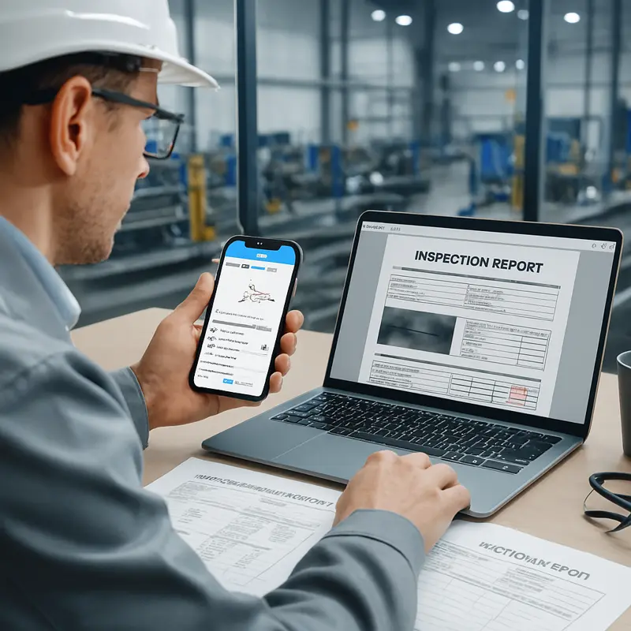

صوّر. عاير. قِس. قوّم وفق EN ISO 5817.
يحوّل WeldGauge آيفونك إلى محطة فحص لحامات محمولة. استخدم سماكة الصفيحة أو قطر الأنبوب المعروفة كمرجع للمعايرة — دون أدوات إضافية. قِس ارتفاع الرابطة والتخريش وعدم المحاذاة وسماكة الحلق والمزيد، ثم قوّم فورًا وفق مستويات الجودة B وC وD في EN ISO 5817.


المزايا الرئيسية
كل ما يحتاجه مفتش اللحام لتقييم الجودة على الموقع — من التقاط الصور إلى نتائج القبول والرفض المعتمدة على المواصفات.
📷 الكاميرا واستيراد الصور
صوّر اللحامات بتكبير يصل إلى 20× لرؤية التفاصيل عن قرب. استورد صورًا موجودة من مكتبتك. إزالة الخلفية تعزل مقطع اللحامة لقياس أوضح.
📐 معايرة ذكية
عاير بأي بُعد معروف موجود في الصورة — سماكة الصفيحة المرئية عند حافة الميل، أو قطر الأنبوب الخارجي، أو مسطرة. يحسب التطبيق نسبة دقيقة من البكسل إلى المليمتر. لا حاجة إلى معدات إضافية.
📏 التقييم وفق EN ISO 5817
اختر نوع العيب (502، 504، 507، 508، 5011، 5213، 512)، وأدخل سماكة الجدار، واحصل فورًا على نتيجة القبول أو الرفض لمستويات الجودة B وC وD. مع دليل مرجعي مصوّر مدمج.
📋 إدارة المشاريع
نظّم عمليات الفحص حسب المشروع مع رقم اللحامة والموقع ومعرّف اللحّام. قياسات متعددة لكل مشروع. جميع البيانات محفوظة محليًا — لا شيء يغادر جهازك.
🛠 مكتبة وصلات الأنابيب
قاعدة بيانات قابلة للبحث عن وصلات الأنابيب القياسية — الأكواع والتي والمرخّمات والأغطية — بالأبعاد والمواصفات لمرجع سريع في الميدان.
🔒 دون اتصال وخصوصية كاملة
كل ميزة تعمل دون إنترنت. لا جمع بيانات ولا حسابات ولا تحليلات. مثالي لعمليات الفحص الميدانية في المواقع النائية بلا اتصال.
شاهده وهو يعمل
أربعة سير عمل حقيقية للفحص تُظهر القدرات الأساسية لـ WeldGauge.
لحام خرطومة — معايرة بسماكة الصفيحة
عاير بسماكة الصفيحة المعروفة المرئية عند حافة ميل اللحام، ثم قِس عيبًا من مسامية الغاز.
طول اللحام — معايرة بفتحة دائرية
استخدم فتحة بقطر معروف كمرجع للمعايرة لقياس طول وصلة اللحام بدقة.
مقطع وصلة T — تقييم وفق EN 5817
قِس عينة مقطع لوصلة T مع الدليل المرجعي المصوّر المدمج وفق EN ISO 5817.
الأدوات — مكتبة الوصلات
تصفّح قاعدة بيانات وصلات الأنابيب القابلة للبحث كمرجع أبعاد سريع أثناء الفحوص الميدانية.
كيف يعمل
أربع خطوات من الصورة إلى تقييم القبول أو الرفض — دون برامج سطح مكتب.
1. التقاط
صوّر اللحامة بالكاميرا المدمجة (تكبير حتى 20×) أو استورد صورة موجودة. تأكد من ظهور مرجع المعايرة — حافة الصفيحة أو سطح الأنبوب أو المسطرة — داخل الإطار.
2. المعايرة
ارسم خطًا عبر أي بُعد معروف في الصورة: سماكة الصفيحة عند حافة الميل، أو قطر الأنبوب الخارجي، أو مسطرة. أدخل القيمة الحقيقية فيؤسس التطبيق نسبة البكسل إلى المليمتر.
3. القياس
المس لقياس أي بُعد في اللحامة — ارتفاع الرابطة، عمق التخريش، طول الضلع، سماكة الحلق، إزاحة عدم المحاذاة. حرّك وقرّب ودوّر بحرية أثناء القياس.
4. التقييم
اختر نوع العيب وأدخل سماكة الجدار. يقارن التطبيق قياسك بحدود EN ISO 5817 ويعرض مستوى الجودة المتحقق — B أو C أو D أو غير مطابق.
حالات استخدام واقعية
صُمّم WeldGauge للبيئات التي يعمل فيها مفتشو اللحام فعلًا.

فحص لحامات خرطومة خطوط الأنابيب
صوّر اللحامات المحيطية في وصلات الأنابيب. استخدم قطر الأنبوب أو سماكة الجدار المعروفة للمعايرة. قِس ارتفاع الرابطة وعدم المحاذاة، ثم قوّم وفق EN ISO 5817.

لحام زاوية — المعايرة بسماكة الصفيحة
لا توجد مسطرة؟ لا مشكلة. سماكة الصفيحة المرئية عند حافة المقطع العرضي هي مرجع معايرتك. قِس سماكة الحلق وأطوال الأضلاع مباشرة على الصورة.

تقييم التخريش والعيوب
قِس عمق التخريش أو زائدة معدن اللحام أو أي عيب آخر. يقيّم التطبيق فورًا وفق مستويات الجودة الثلاثة في EN ISO 5817 بنتائج واضحة للقبول أو الرفض.

الفحص الميداني — تجميعات أنابيب معقدة
افحص لحامات التي والأكواع والمرخّمات والوصلات المدوّرة. يعمل كليًا دون اتصال — مثالي لمواقع الأنابيب النائية بلا إنترنت.

التوثيق والتقارير
صدّر نتائج القياس والصور المشروحة لسجلات الفحص. جميع بيانات المشروع منظمة حسب رقم اللحامة والموقع واللحّام — جاهزة لوثائق ضبط الجودة.
الأسئلة الشائعة
هل يتطلب التطبيق اتصالاً بالإنترنت؟
لا. جميع المزايا — الكاميرا والمعايرة والقياس والتقييم وفق EN ISO 5817 — تعمل دون اتصال بالكامل. لا تُرسل أي بيانات أبدًا.
ما الذي يمكن استخدامه كمرجع للمعايرة؟
أي جسم ببُعد معروف ظاهر في الصورة: سماكة الصفيحة عند حافة الميل، أو قطر الأنبوب الخارجي، أو مسطرة، أو مكعب معايرة، أو حتى عملة معدنية. يحوّل التطبيق المسافات بالبكسل إلى مليمترات حقيقية اعتمادًا على مرجعك.
ما المواصفات المدعومة؟
يقيّم WeldGauge عيوب اللحامات وفق EN ISO 5817 بمستويات الجودة B (الصارم) وC (المتوسط) وD (المتساهل). سبعة أنواع من العيوب مدعومة بأدلة مرجعية مصوّرة.
ما دقة القياس؟
تعتمد الدقة على مرجع المعايرة وجودة الصورة. مع بُعد مرجعي واضح وصورة محرّك التركيز جيدة، يمكن تحقيق دقة أقل من المليمتر.
هل يجمع التطبيق أي بيانات؟
لا. لا يجمع أي بيانات — بلا تحليلات وبلا تتبع وبلا حسابات. جميع الصور والقياسات تبقى على جهازك. راجع سياسة الخصوصية.
هل يعمل على آيباد؟
نعم. WeldGauge تطبيق عام محسَّن لآيفون وآيباد معًا.
لمن هذا التطبيق؟
مفتشو اللحام (CWI وCSWIP وIWI) ومهندسو ضبط الجودة والمشرفون في المصانع وطلاب اللحام — أي شخص يحتاج إلى تقييم سريع لللحامات وفق المواصفات على الموقع.
كيف أتواصل مع الدعم؟
راسلنا على wangning.engineer@outlook.com. وقت الاستجابة المعتاد من 24 إلى 48 ساعة.
احصل على التطبيق
WeldGauge متاح على App Store لآيفون وآيباد.